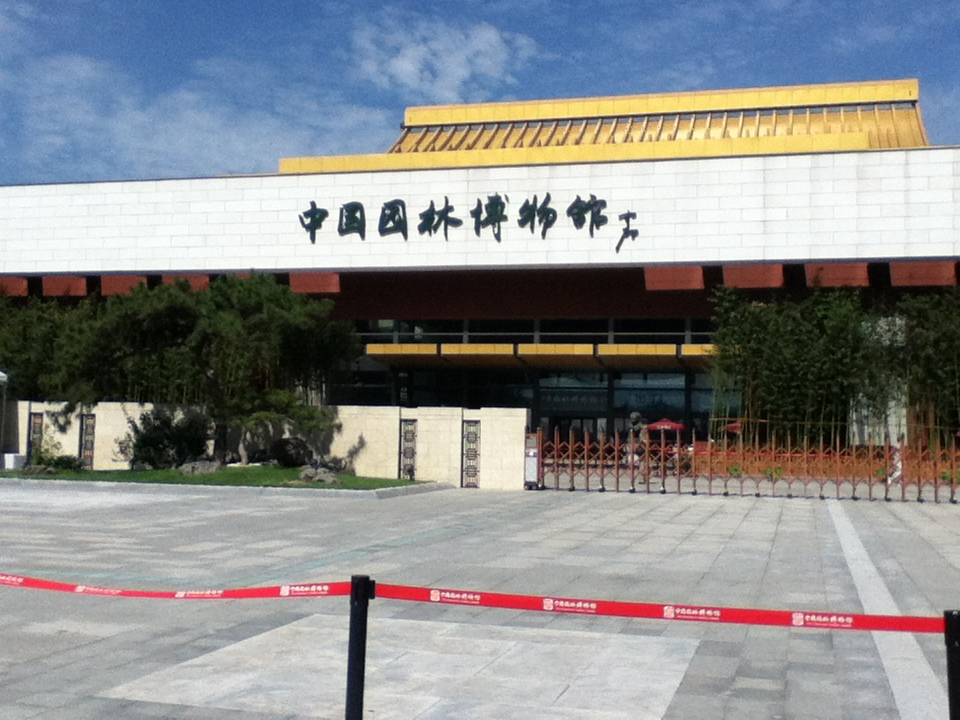
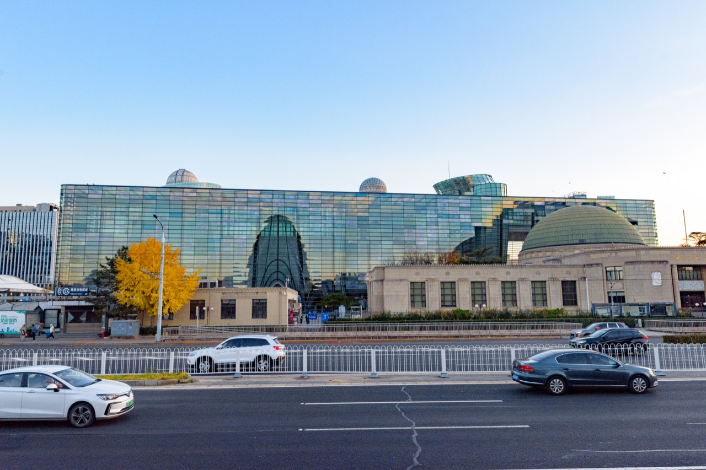
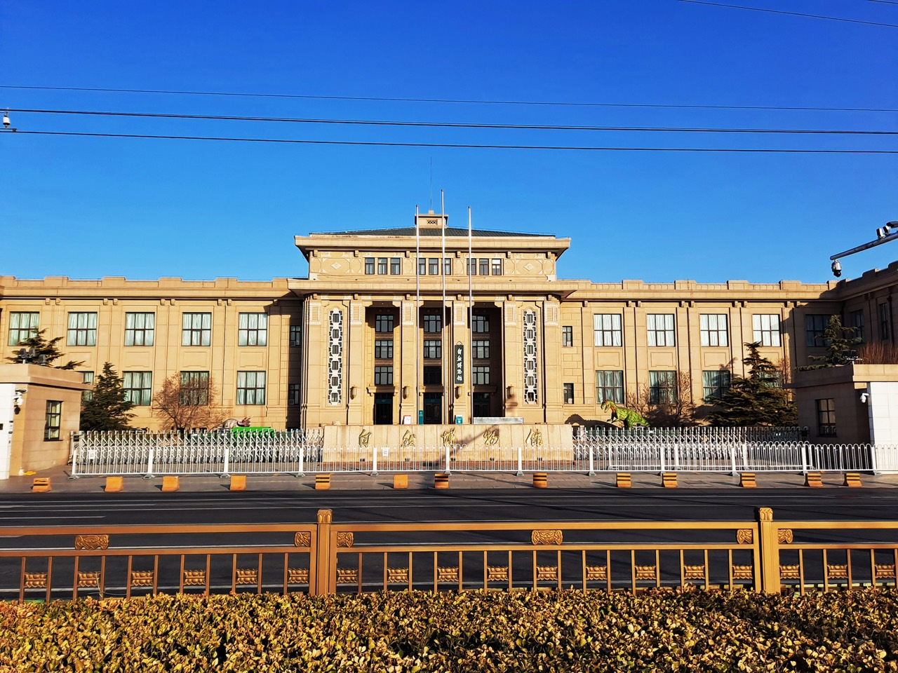
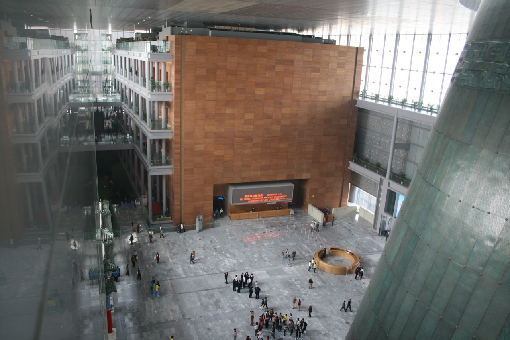
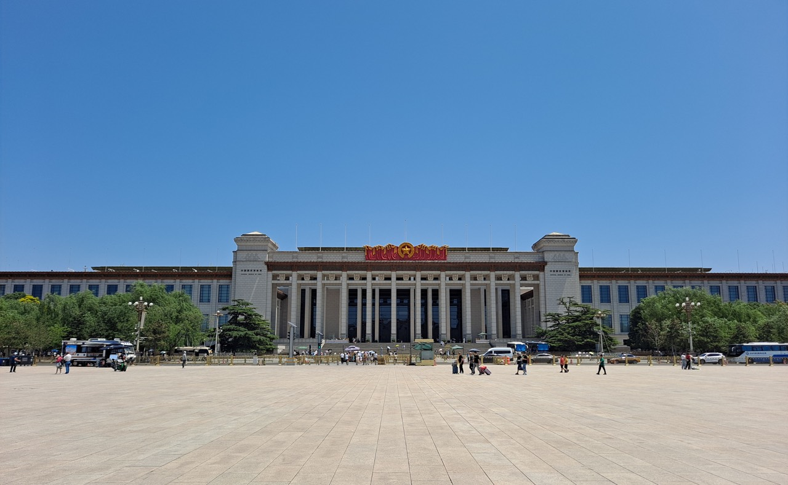
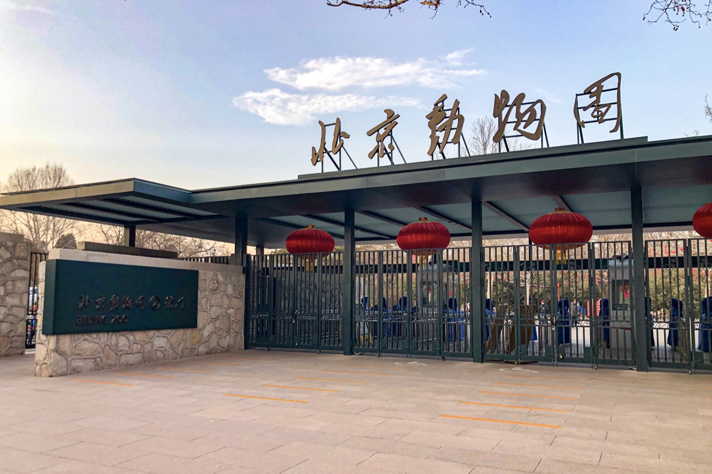
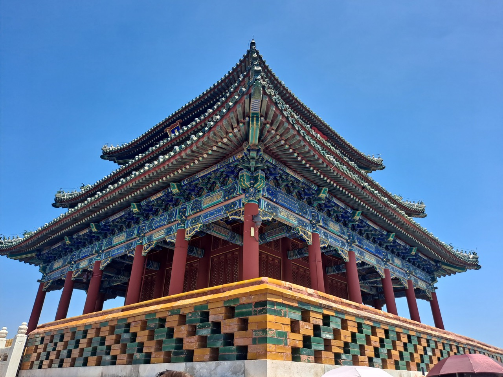
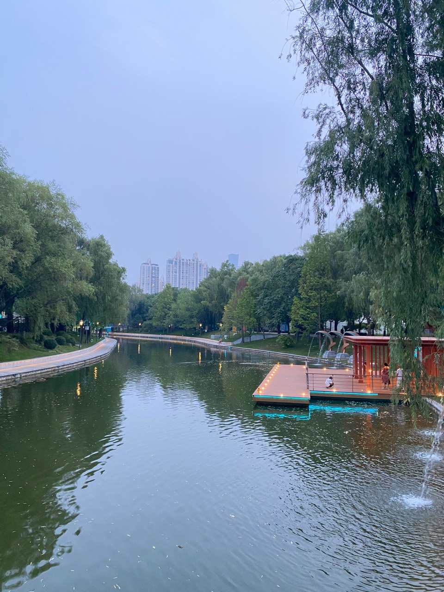
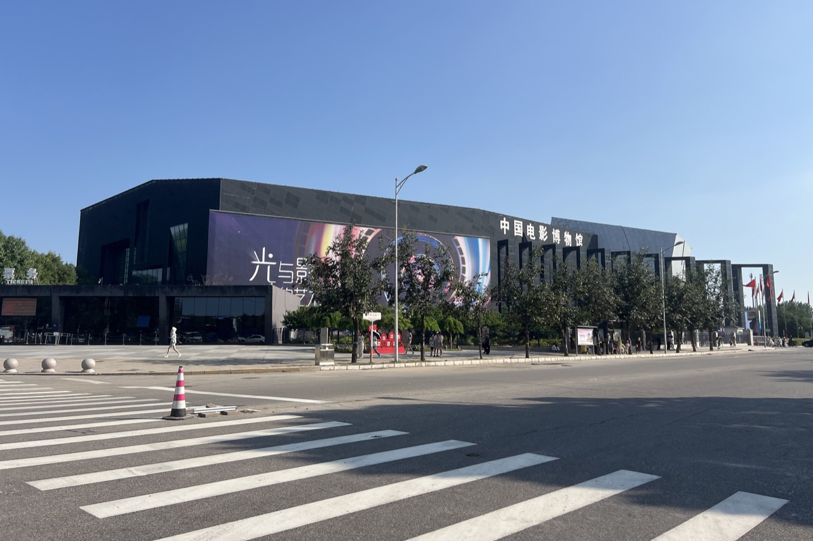
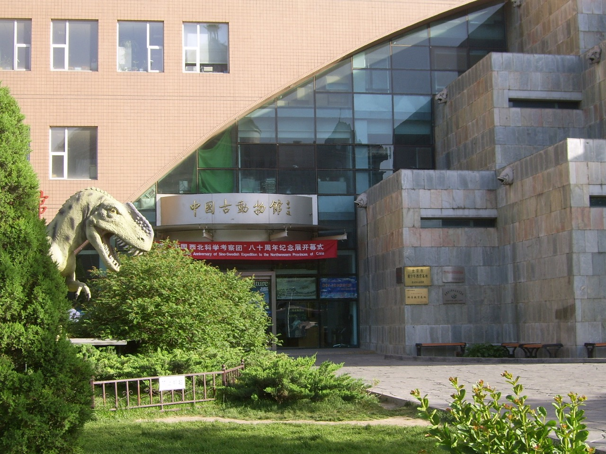

中国园林博物馆

作品：园林博物馆.jpg
摄影：Qinyongr
拍摄日期（来源声明）：2013-08-24

2013年中国园林博物馆外观历史照片；不代表当前入口或展览安排。
保留来源原图文件，未放大、裁切、重绘或换背景。成品为960×720。页面按容器缩放、裁显；完整原图见来源。
照片保留原构图，仅按下列说明进行等比例缩小和JPEG压缩。照片及机械处理结果沿用各自标注的许可。历史影像不代表当前开放、展览或季节；摄影者不因此为小程序背书。

作品：园林博物馆.jpg
摄影：Qinyongr
拍摄日期（来源声明）：2013-08-24
2013年中国园林博物馆外观历史照片；不代表当前入口或展览安排。
保留来源原图文件，未放大、裁切、重绘或换背景。成品为960×720。页面按容器缩放、裁显；完整原图见来源。

作品：Beijing Planetarium (20221112164636).jpg
摄影：N509FZ
拍摄日期（来源声明）：2022-11-12
2022年北京天文馆新旧馆建筑外观历史照片；不代表当前展览、场次或入口安排。
由来源原图等比例缩小，并进行JPEG压缩（质量参数72）；未裁切、重绘、去人物或换背景。成品为1280×853。页面按容器缩放、裁显；完整原图见来源。

作品：Beijing Museum of Natural History 2.jpg
摄影：钉钉
拍摄日期（来源声明）：2021-02-15
2021年国家自然博物馆前身北京自然博物馆的天桥馆舍历史外观；旧馆名不代表当前名称，也不表示新馆开放。
由来源原图等比例缩小，并进行JPEG压缩（质量参数72）；未裁切、重绘、去人物或换背景。成品为1280×960。页面按容器缩放、裁显；完整原图见来源。

作品：2008 Capital Museum, Beijing 02.jpg
摄影：Gary Lee Todd, Ph.D.
拍摄日期（来源声明）：2008-04-18
2008年首都博物馆白云路馆中庭、大厅和铜质建筑构件的历史内景；不代表当前展览、陈列或开放安排。
由来源原图等比例缩小，并进行JPEG压缩（质量参数72）；未裁切、重绘、去人物或换背景。成品为1280×853。页面按容器缩放、裁显；完整原图见来源。

作品：National Museum of China 2.jpg
摄影：EditQ
拍摄日期（来源声明）：2023-06-06
2023年中国国家博物馆建筑外观历史照片；不代表当前入口、展览或预约安排。
由来源原图等比例缩小，并进行JPEG压缩（质量参数72）；未裁切、重绘、去人物或换背景。成品为1280×789。页面按容器缩放、裁显；完整原图见来源。

作品：Gate 2 of Beijing Zoo (20210219172746).jpg
摄影：N509FZ
拍摄日期（来源声明）：2021-02-19
2021年北京动物园2号门历史外观；仅为场所局部，不据此修改默认导航或表示该门当前开放。
由来源原图等比例缩小，并进行JPEG压缩（质量参数72）；未裁切、重绘、去人物或换背景。成品为1280×853。页面按容器缩放、裁显；完整原图见来源。

作品：Wanchun Pavilion (Jingshan Park) 2.jpg
摄影：EditQ
拍摄日期（来源声明）：2023-07-25
2023年景山公园万春亭建筑转角历史照片；仅为亭阁局部，不代表公园全貌或当前季节。
由来源原图等比例缩小至1280×960，并进行JPEG压缩（质量参数72）；未裁切、重绘、去人物或换背景。页面按容器缩放、裁显；完整原图见来源。

作品：Beijing Sun Park.jpg
摄影：Hhhh2
拍摄日期（来源声明）：2022-10-28
2022年秋季北京朝阳公园园内局部历史景观；不代表公园全貌或当前季节。
由来源原图等比例缩小，并进行JPEG压缩（质量参数72）；未裁切、重绘、去人物或换背景。成品为960×1280。页面按容器缩放、裁显；完整原图见来源。

作品：China National Film Museum (20240808162205).jpg
摄影：N509FZ
拍摄日期（来源声明）：2024-08-08
2024年中国电影博物馆建筑外观历史照片；不代表当前展览、放映场次或入口安排。
由来源原图等比例缩小，并进行JPEG压缩（质量参数72）；未裁切、重绘、去人物或换背景。成品为1280×853。页面按容器缩放、裁显；完整原图见来源。

作品：Paleozoological Museum of China.jpg
摄影：Shizhao
拍摄日期（来源声明）：2007
2007年中国古动物馆建筑外观历史照片；不代表当前馆舍外观、展览或开放安排。
由来源原图等比例缩小，并进行JPEG压缩（质量参数72）；未裁切、重绘、去人物或换背景。成品为1280×960。页面按容器缩放、裁显；完整原图见来源。
.jpg){kind=link}


.jpg){kind=link}
_2.jpg){kind=link}

.jpg){kind=link}